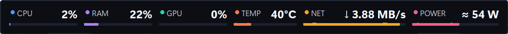
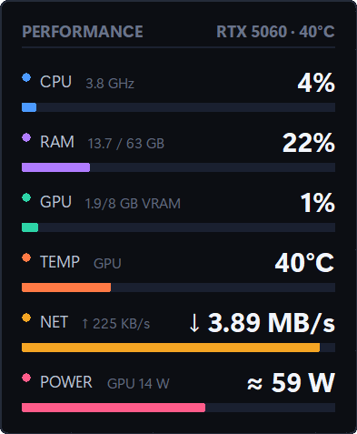
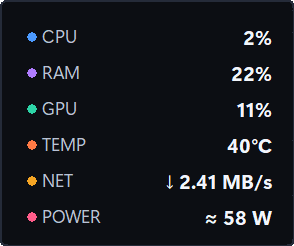
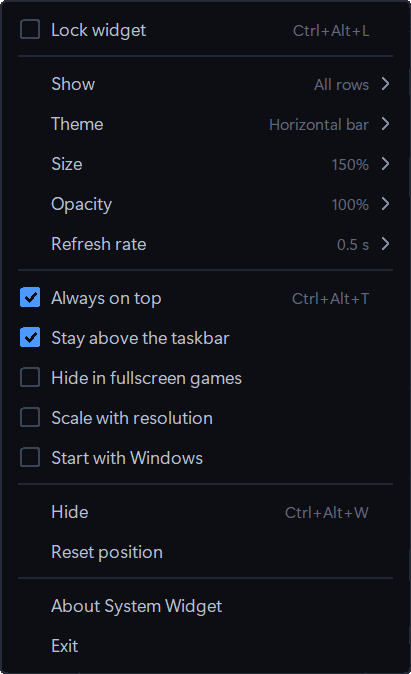
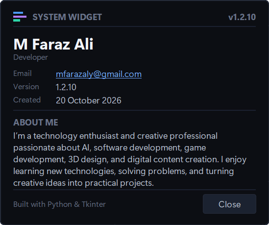

Windows desktop widget
System Widget
CPU, RAM, GPU, temperature, network and estimated power in one always-on-top strip. It sits over the taskbar, stays visible above borderless games, and stays out of the way when you don’t need it.
Per-user install · no admin prompt · uninstall from Settings → Apps

Real screenshot, not a mock-up
What it shows
Six numbers, one line.
Everything is sampled once a second by default and drawn straight onto the widget — no browser engine, no dashboard, no login.
CPU
Total load with the current clock speed, so you can tell “busy” from “boosting”.
RAM
Used and total memory in gigabytes, plus the percentage on the bar.
GPU
Core utilisation and VRAM usage, read through NVIDIA’s NVML library.
TEMP
GPU die temperature in °C — the sensor that’s readable without a kernel driver.
NET
Download and upload throughput, formatted from B/s up to MB/s.
POWER
Measured GPU watts plus an estimated CPU and system draw — hence the “≈”.
Themes
Four ways to look at it.
Switch from the right-click menu. Every theme shows the same six rows — pick the one that suits the corner of your screen.



Playing
Visible while you play.
The widget is a normal always-on-top window, so it can sit above a game running in Borderless or Fullscreen Windowed mode. That’s the mode most modern games call “borderless” in their display settings.
Exclusive fullscreen is different: the game takes over the display entirely, and no ordinary window can be drawn on top of it. If the widget disappears when a game starts, switch that game to borderless.
- Scales down with the game. At a lower resolution it shrinks proportionally instead of swallowing the screen.
- Remembers each monitor. Position is anchored to a screen corner, so a second display or a resolution change doesn’t throw it across the desk.
- Lock it and forget it. Lock mode ignores the mouse so a stray click can’t drag the widget mid-game — the right-click menu still opens.
Illustration — the widget in the top corner of a borderless game.
The right-click menu

Rows, theme, size, opacity and refresh rate live here, along with lock, always-on-top, taskbar placement and start-with-Windows. The menu is drawn in the widget’s own style, not Windows grey.
The small things
Made to stay out of the way.
No tray icon to hunt for, no settings window to manage. Right-click the widget, change what you need, close the menu.

Hotkeys, if you prefer the keyboard.
Every action in the menu has a shortcut. They work globally, even while a game has focus.
| Ctrl Alt W | Show or hide the widget |
| Ctrl Alt T | Toggle always-on-top |
| Ctrl Alt L | Lock or unlock the mouse |
| Ctrl + wheel | Resize between 50 % and 150 % |
| Right-click | Open the menu |
What you need.
It runs on a normal Windows desktop and bundles its own runtime. Nothing else to install.
| Windows | 10 or 11, 64-bit |
| GPU data | NVIDIA card with the normal driver (NVML) |
| Without NVIDIA | CPU, RAM, network still work; GPU and TEMP stay empty |
| Python | Not required — bundled into the exe |
| Disk | About 11 MB installed |
| Admin rights | Not needed for the per-user install |
| Network | No telemetry, no accounts, no connections |
Install
Two ways to run it.
Use the installer if you want a Start Menu shortcut and a clean uninstall. Use the zip if you’d rather keep everything in one folder.
Download the .msi
Grab the 64-bit installer. It installs for the current user, so Windows won’t ask for an administrator password.
Run it once
Windows SmartScreen may warn because the build isn’t code-signed: choose More info → Run anyway.
Right-click the strip
Pick a theme, choose your rows, set the size and opacity. Position and settings are saved automatically.
SystemWidget.exe. Settings still live in %APPDATA%\SystemWidget, so the installer and the portable build share the same configuration.
FAQ
Questions people ask.
If yours isn’t here, send me an email or open an issue on GitHub.
Still stuck?
Include the widget version and what you were doing when it happened — I read every message.
Email meWill it show on top of my game?
Yes, if the game runs in Borderless or Fullscreen Windowed mode. Exclusive fullscreen takes over the display and no ordinary window can draw over it — that’s a Windows limitation, not a widget setting.
Why is the power figure approximate?
GPU watts come straight from NVML. CPU and the rest of the system are modelled from a 65 W TDP plus a fixed allowance, so the result is an estimate — that’s why it’s prefixed with “≈”.
Why is there no CPU temperature?
Reading the CPU package sensor needs a signed kernel driver. The TEMP row shows the GPU die temperature instead, which NVML exposes without one.
Does it need Python or administrator rights?
No. The Python runtime is bundled into a single exe, and the MSI installs per-user — no UAC prompt. The portable zip runs without installing anything.
Does it send anything anywhere?
No telemetry, no accounts and no connections. It only reads local performance counters and stores your settings in %APPDATA%\SystemWidget\settings.json.
How do I uninstall it?
Settings → Apps → Installed apps → System Widget → Uninstall. For the portable build, just delete the folder. Your settings file stays behind and can be removed by hand.
Releases
What’s new.
The current build is 1.2.10. Older versions and their notes live on the GitHub releases page.
1.2.10 21 October 2026
The About card now opens reliably — including after you’ve closed it once. Settings, themes and the installer are unchanged.
1.2.9 20 October 2026
Installer progress page cleaned up: the banner artwork no longer collides with the title Windows draws over it.
Earlier 1.2.0 – 1.2.8
Multi-monitor placement, corner anchoring, proportional scaling for low game resolutions, and the four themes.
Licence. Copyright © 2026 M Faraz Ali. All rights reserved.
The source and installers are published for reference and personal use. Downloading a release and running the widget on your own machines is fine; copying, modifying or redistributing the project, in whole or in part, is not — please ask first.
Download
Take it for a spin.
Version 1.2.10 for Windows 10 and 11. Free, ~11 MB, and it takes about thirty seconds to set up.